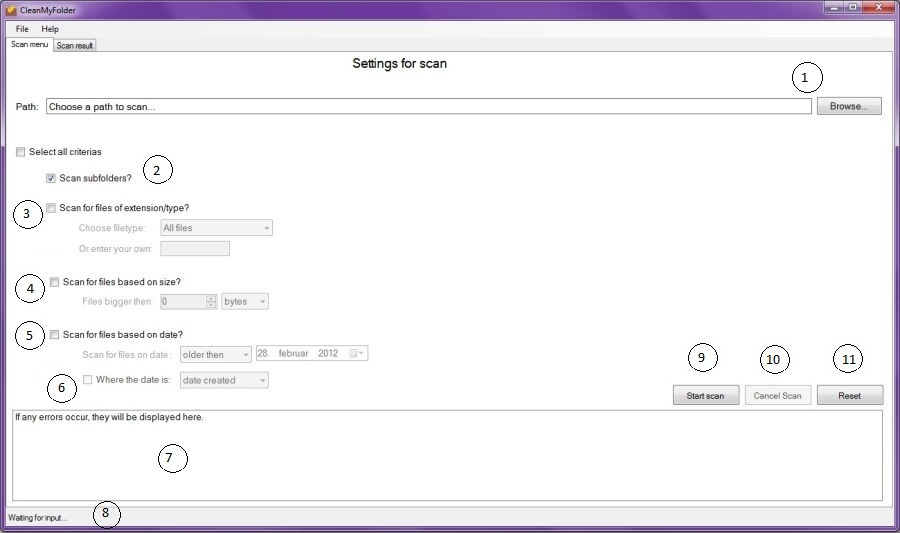
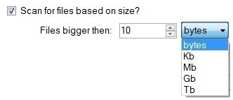
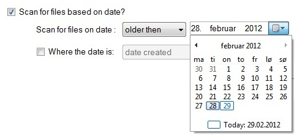
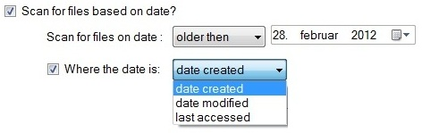

Startscreen with settings for the scan
Startscreen with settings for the scan
- Path to be scanned
-
Include/exclude subfolders from scan
(default is checked) - Check to include specific filetypes in scan
-
Check to include files over a specific size

The size value goes from 0 - 999, and the parameter from bytes to terrabytes.
-
Check to include files older/newer then and select the date

The 'max date' is todays date
-
Check to specify what date to scan for
(default is 'date created')
Scan for files that are 'older/newer then' 'date created', 'date modified' or 'last accessed' - Listbox displaying information and error messages
- Progress during scan is displayed here
- 'Start scan': Starts the scan (a path must be selected)
-
'Cancel scan': Cancels the scan.
(No results will be shown, and previous results will be removed). - 'Reset': Removes the path, checked criterias and values (size, date, etc).
<Current version 1.0.0.0>